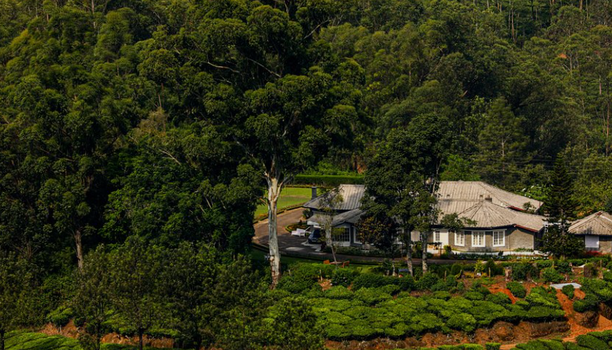
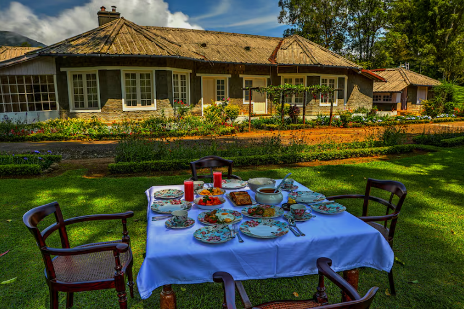

Lockhart Bungalow is a historic colonial bungalow located near Lockhart Estate in Munnar, Idukki district. Built during the British plantation period, the bungalow is surrounded by vast tea gardens, green hills, and beautiful landscapes. Its traditional architecture and peaceful atmosphere make it a popular attraction for visitors who enjoy history and nature.
The bungalow reflects the rich heritage of Munnar's tea plantation history and offers stunning views of the surrounding valleys. Visitors can enjoy the cool climate, fresh mountain air, and scenic beauty while exploring the nearby tea estates. Lockhart Bungalow is an ideal destination for photography, sightseeing, and experiencing the colonial charm of Kerala's high ranges.


Lockhart Bungalow is a historic heritage bungalow located in the famous Lockhart Tea Estate near Munnar in Idukki District, Kerala. Surrounded by more than 1,500 acres of tea plantations, the bungalow offers breathtaking views of misty hills, lush green valleys and beautiful tea gardens. It is one of the finest examples of British colonial architecture in Munnar. 1
The Lockhart Tea Estate was established in 1879 during the British colonial period. Lockhart Bungalow was built as the residence of British tea estate managers. Today, the bungalow has been restored as a heritage stay while preserving its original colonial charm and architecture. 2
The bungalow features classic British colonial architecture with spacious rooms, wooden furniture, fireplaces, large windows and wide verandas overlooking the tea gardens. It combines historical elegance with modern comforts. 3
The bungalow is surrounded by tea plantations, flowering plants, native trees and lush greenery of the Western Ghats. The peaceful atmosphere makes it an ideal destination for nature lovers.
Today, Lockhart Bungalow is one of Munnar's most popular heritage accommodations. Visitors enjoy its colonial atmosphere, tea plantation experiences, peaceful surroundings and panoramic views of the Western Ghats. 4